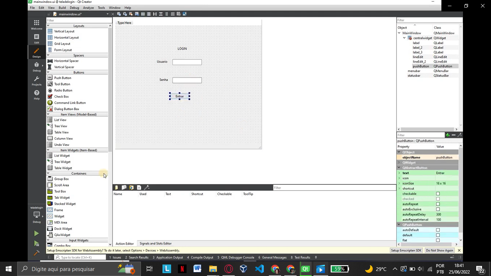
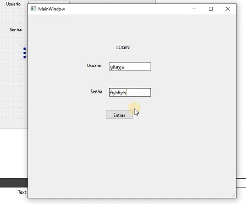
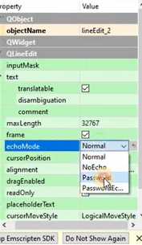
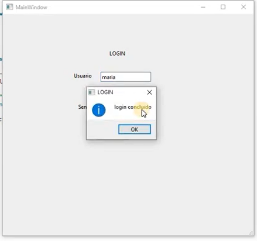
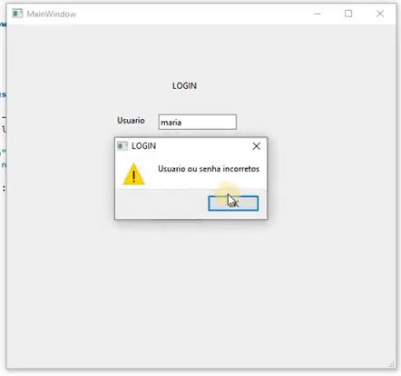

Label, Botão e Input Fields
Para essa primeira aplicação é necessário entender um pouco sobre os itens que vamos utilizar, como:
Label: Representa o rótulo de texto para um controle e fornece suporte para teclas de acesso.
QLabel é usado para exibir texto ou uma imagem. Nenhuma funcionalidade de interação do usuário é fornecida;
PushButton: Representa um controle de botão. O botão de pressão, ou botão de comando, talvez seja o widget mais comumente usado em qualquer interface gráfica do usuário. Pressione (clique) um botão para comandar o computador para executar alguma ação ou para responder a uma pergunta;
Input Fields: Os campos de entrada são um elemento essencial do design da interface do usuário, fornecendo aos usuários os meios para inserir respostas não padronizadas. Eles são usados em muitas situações diferentes, mas a maioria das pessoas já se deparou com eles ao inserir dados pessoais e endereços de entrega em formulários da web de comércio eletrônico ou enviar consultas online. Solicitando informações personalizadas, esses campos podem agilizar e aprimorar a interação.
Cada tipo de controle de entrada tem seu próprio caso de uso de destino específico.
LineEdit: Faz parte dos Campos de Entrada (Input Fields) e é um editor de texto de uma linha.
Uma edição de linha permite que o usuário insira e edite uma única linha de texto simples com uma coleção útil de funções de edição, incluindo desfazer e refazer, recortar e colar e arrastar e soltar.
Neste tutorial veremos como criar uma tela de login utilizando os itens acima.
Primeiro, na parte de design do Qt Creator deve-se utilizar três Text Label, dois Line Edit e um PushButton:
O primeiro Text Label será para colocarmos “LOGIN”, o segundo “Usuário” e o terceiro “Senha'';
No PushButton é colocado o nome “Entrar”;
Como o Line Edit é um campo de entrada seu texto será digitado pelo usuário após sua execução.
Essa mudança de texto pode ser feita dando um clique duplo sobre o elemento ou modificando na tabela de propriedades localizada no canto inferior direito.

Após a modificação deve ficar assim:
Ao executarmos nossa tela de login a senha fica visível.
Para que isso não ocorra devemos ir até a tabela de propriedades procurar echoMode da QLineEdit e modificar para password. Após a mudança a senha não será mais visível.
Devemos adicionar função ao botão;
Para adicionar funcionalidade ao botão deve-se selecionar a função Clicked (que é ativada ao clicar do lado direito do mouse);
Depois indo até Go to slot…;
Selecionando Clicked e pressionando Ok.
Após acionarmos o Clicked do PushButton seremos direcionados ao mainwindow.cpp, local que vamos programar nossa tela de login.
Para iniciar a programação dessa aplicação vamos incluir a biblioteca QMessageBox;
A Classe QMessageBox é utilizada para informar o usuário ou para fazer uma pergunta ao usuário e receber uma resposta;
#include "mainwindow.h"
#include "./ui_mainwindow.h"
#include <QMessageBox>
Após isso, vamos programar dentro da void MainWindow::on_pushButton_clicked() { };
1° Adicionaremos as variáveis do tipo QString que vamos nomear de usuário e senha, ambas vão receber ui-> direcionado ao LineEdit correspondente a cada um;
void MainWindow::on_pushButton_clicked() {
QString username=ui->lineEdit->text();
QString senha= ui->lineEdit_2->text();
}
2° Usaremos if para colocarmos um nome de usuário e senha;
Se ambos forem verdadeiros, deverá ser informado que o login foi concluído.
void MainWindow::on_pushButton_clicked()
{
QString username=ui->lineEdit->text();
QString senha= ui->lineEdit_2->text();
if(username == "maria" && senha =="123") {
QMessageBox:: information(this, "Login", "login concluído");
}
}
3° Usaremos else caso o usuário ou senha seja diferente; Se algum dos dois for diferente do que foi adicionado no if será informado que o usuário ou senha estão incorretos.
void MainWindow::on_pushButton_clicked()
{
QString username=ui->lineEdit->text();
QString senha= ui->lineEdit_2->text();
if(username == "maria" && senha =="123") {
QMessageBox:: information(this, "Login", "OK");
} else{
QMessageBox::warning (this, "Login", "username ou senha incorretos");
}
}
Ao executar o código será exibido as mensagens adicionadas:
 Aqui está o código completo da mainwindow.cpp:
mainwindow.cpp
#include "mainwindow.h"
#include "./ui_mainwindow.h"
#include <QMessageBox>
MainWindow::MainWindow(QWidget *parent)
: QMainWindow(parent)
, ui(new Ui::MainWindow)
{
ui->setupUi(this);
}
MainWindow::~MainWindow()
{
delete ui;
}
void MainWindow::on_pushButton_clicked()
{
QString username=ui->lineEdit->text();
QString senha= ui->lineEdit_2->text();
if(username == "maria" && senha =="123") {
QMessageBox:: information(this, "Login", "OK");
} else{
QMessageBox::warning (this, "Login", "username ou senha incorretos");
}
}